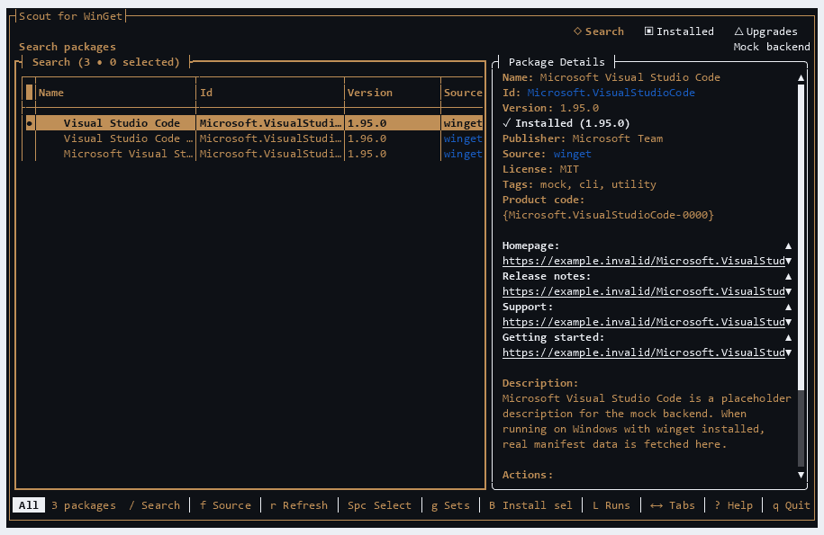

Find the right package
Search your WinGet sources, inspect publisher and version details, then choose exactly what to install.
MADE FOR WINDOWS 10 & 11
Discover software, plan installs, manage upgrades, and keep track of changes from a terminal that feels at home on Windows.

THE WORKSPACE
Scout brings the useful parts of WinGet together without hiding what will happen to your system.
Search your WinGet sources, inspect publisher and version details, then choose exactly what to install.
Select several results and review a source-aware install plan before Scout changes anything.
See upgrades, run them together, and manage pins when a package should stay on a specific version.
Review recent runs, save package sets, export visible lists, and opt in to daily update checks.
A QUICK TOUR
Move between Search, Installed, and Upgrades with the keyboard. Details stay beside your list, so context is always close.
Captured from the real application with tuirec. Demo data is used in this recording.
GET STARTED
Download the portable ZIP for your PC, extract the whole folder, and run wingetscout.exe. No .NET runtime is needed.
Choose win-x64 or win-arm64.
Extract all files together to a folder you will keep.
Open a terminal there and run wingetscout.exe.
The WinGet community package is being prepared. The winget install command will be available after its submission is accepted.